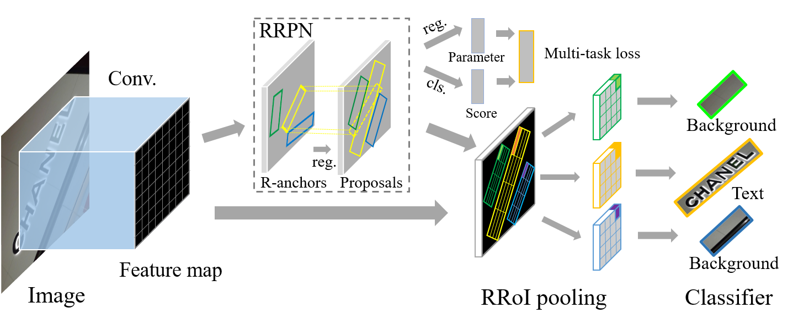

Arbitrary-Oriented Scene Text Detection
via Rotation Proposals
Jianqi Ma1, Weiyuan Shao2, Hao Ye2, Li Wang1, Hong Wang2, Yingbin Zheng2, Xiangyang Xue1
1Fudan University 2Shanghai Advanced Research Institute, CAS
Overview
This paper introduces a novel rotation-based framework for arbitrary-oriented text detection in natural scene images. We present the Rotation Region Proposal Networks (RRPN), which is designed to generate inclined proposals with text orientation angle information. The angle information is then adapted for bounding box regression to make the proposals more accurately fit into the text region in orientation. The Rotation Region-of-Interest (RRoI) pooling layer is proposed to project arbitrary-oriented proposals to the feature map for a text region classifier. The whole framework is built upon region proposal based architecture, which ensures the computational efficiency of the arbitrary-oriented text detection comparing with previous text detection systems.

We conduct experiments using the rotation-based framework on three real-world scene text detection datasets, and demonstrate its superiority in terms of effectiveness and efficiency over previous approaches.

Code
The code can be downloaded from github.
Please cite our paper if you use the code in your research:
@article{ma2017arbitrary,
title={Arbitrary-Oriented Scene Text Detection via Rotation Proposals},
author={Ma, J. and Shao, W. and Ye, H. and Wang, L. and Wang, H. and Zheng, Y. and Xue, X.},
journal={arXiv preprint arXiv:1703.01086},
year={2017}
}
Related Publication
- Jianqi Ma, Weiyuan Shao, Hao Ye, Li Wang, Hong Wang, Yingbin Zheng, Xiangyang Xue
Arbitrary-Oriented Scene Text Detection via Rotation Proposals [pdf]
arXiv:1703.01086, 2017.